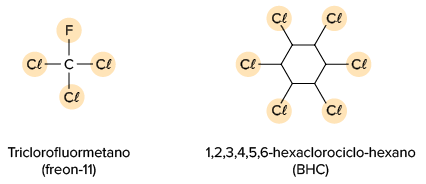
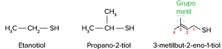

Em 2011, o mundo ultrapassou a expressiva marca de 7 bilhões de habitantes e, segundo estimativas da Organização das Nações Unidas (ONU), esse número chegará a 9,3 bilhões em 2050. Diante desse cenário, uma questão é causa de grande
preocupação para os países: como produzir alimentos para tanta gente?
Uma das medidas mais defendidas consiste em melhorar a eficiência da produção agrícola, empregando técnicas e tecnologias, como os agrotóxicos. Porém, o uso de agrotóxicos, também chamados de defensivos agrícolas, sempre foi um
tema de muita discussão. De um lado, agricultores convencionais defendem o seu uso, alegando o aumento da produtividade e, consequentemente, a melhora da economia e da disponibilidade de alimentos. Do outro lado, defensores
ambientais o condenam em razão dos malefícios ao meio ambiente e à saúde de pessoas e animais, os quais são causados por substâncias presentes nos compostos, muitas delas pertencentes a diversas funções orgânicas.
O Brasil, por ser um grande produtor agrícola, é um dos maiores consumidores de agrotóxicos no mundo e, infelizmente, ainda permite o uso de dezenas de substâncias que já foram proibidas em outros países. É imprescindível uma discussão
séria sobre os prós e os contras do uso desses produtos, de modo que a saúde da população não seja colocada em risco, e que se continuem a buscar alternativas para o aumento da produção de alimentos. Afinal, comer é um direito
de todos.
Agrotóxicos ou defensivos agrícolas: existe um termo correto?
Como um gambá espanta seus predadores?
Neste capítulo serão abordadas as habilidades
EM13CNT104
,
EM13CNT205
,
EM13CNT301
,
EM13CNT304
,
EM13CNT306
,
EM13CNT307
e
EM13CNT310
.
Nitrilas
São compostos que apresentam o grupo
nitrila (—C ≡ N), ou
cianeto , ligado pelo carbono a outro carbono. Em geral, pode-se considerar que as nitrilas são obtidas pela substituição do hidrogênio do ácido cianídrico (
H CN) por um radical orgânico (
R ). Esquematicamente, as nitrilas podem ser representadas por:
Grupo funcional das nitrilas.
A etanonitrila, mais conhecida como acetonitrila, é a nitrila mais simples. Em temperatura ambiente, ela é líquida, incolor, com leve odor e solúvel em água. Ela é um solvente orgânico, utilizado para extrair pesticidas em amostras
de plantas e sementes. Dessa maneira, é possível identificar quais foram os pesticidas utilizados.
smereka/iStockphoto.com
Acetonitrila, usada como solvente orgânico.
Nomenclatura das nitrilas
Nomenclatura IUPAC
Para nomearmos uma nitrila, devemos seguir as regras de nomenclatura da IUPAC:
Para as nitrilas, o grupo funcional tem prioridade na numeração da cadeia principal, mas não é necessário indicar sua posição, pois ele sempre estará no carbono da extremidade da cadeia. Caso exista insaturação, a posição dela
deve ser mencionada antes do infixo que a representa (“en” para a ligação dupla e “in” para a ligação tripla).
Veja alguns exemplos:
Observe que, entre o infixo e o sufixo, devemos colocar a vogal “o” para melhorar a sonoridade da palavra.
Observe que o carbono ligado ao nitrogênio, caracterizando a função nitrila,
não é considerado na contagem dos carbono s que identificam o grupo substituinte, uma vez que ele já foi contado quando mencionamos o termo “cianeto”, característico para essa função.
Nomenclatura semissistemática (da classe funcional)
Para nomearmos uma nitrila dessa forma, iniciamos o nome do composto com o termo “cianeto de” e, em seguida, acrescentamos o nome do grupo substituinte que está ligado à função, no feminino.
Veja alguns exemplos:
Algumas nitrilas apresentam ainda nomes triviais, como acetonitrila, para o cianeto de metila, e acrilonitrila, para o cianeto de vinila. A acrilonitrila é utilizada na produção de polímeros sintéticos, como o poliacrilonitrila,
empregado na fabricação de fibras têxteis, em especial o orlon.
hanif66/Shutterstock.com
Acrilonitrila é uma nitrila utilizada na fabricação do orlon, uma fibra têxtil.
Propriedades físicas das nitrilas
Encontramos nitrilas líquidas à temperatura ambiente quando suas cadeias apresentam até 14 átomos de carbono. Nessas condições, elas são classificadas como compostos insolúveis em água.
As nitrilas com 15 ou mais átomos de carbono são encontradas sólidas à temperatura ambiente e são solúveis em água.
Nitrilas são compostos que têm alto teor de toxidade e altas temperaturas de fusão e de ebulição.
Nitrocompostos
São compostos que apresentam o grupo
nitro (–NO2) ligado a um carbono de cadeia alifática ou aromática, representada por R, esquematicamente:
Grupo funcional característico dos nitrocompostos.
Os nitrocompostos (R—NO2) são derivados do ácido nítrico (HNO3), quando este reage com um grupo orgânico R presente em um hidrocarboneto e resulta, também, na eliminação de uma molécula de água. Veja:
Um nitrocomposto bastante conhecido é o trinitrotolueno (TNT). Trata-se de um sólido amarelo cristalino, que funde a 81 °C e que tem um imenso potencial explosivo. Por isso, ele é muito utilizado em implosões de prédios e outras
edificações.
Luke Schmidt/Shutterstock.com
Implosão de um prédio utilizando TNT.
Nomenclatura dos nitrocompostos
Para nomearmos um nitrocomposto, devemos seguir as regras de nomenclatura da IUPAC:
Veja alguns exemplos:
Assim como nas demais funções orgânicas estudadas, o grupo funcional tem prioridade na numeração da cadeia principal e, caso exista insaturação, sua posição deve ser mencionada antes do infixo que a representa (“en” para a ligação
dupla e “in” para a ligação tripla).
Note que o nitrocomposto aromático conhecido como
TNT (2,4,6-trinitrotolueno) não segue a regra da nomenclatura IUPAC quanto à numeração da cadeia principal. Em vez de iniciar a numeração pelo grupo nitro, começa-se pelo radical metil, pois no benzeno já havia sido
realizada a substituição de um átomo de hidrogênio por um grupo substituinte metil, formando o composto (de nome IUPAC) metilbenzeno, cujo nome semissistemático é tolueno.
Propriedades físicas dos nitrocompostos
A maioria dos nitrocompostos são encontrados na forma de um líquido viscoso à temperatura ambiente. Porém, é possível encontrar alguns de baixa massa molar na forma líquida e mais fluida, os quais são compostos solúveis em água.
Em outras condições, os nitrocompostos são insolúveis em água e são densos.
Os nitrocompostos aromáticos são muito reativos, por isso são utilizados em explosivos. Quanto maior o número de grupos nitro em um composto, mais reativo e, consequentemente, mais explosivo ele se torna.
Haletos orgânicos
São compostos com ao menos um
halogênio (elemento químico da família VIIA ou grupo 17 da tabela periódica: flúor, cloro, bromo ou iodo) ligado a um carbono. Esquematicamente, podem ser representados por
R – X ou
Ar – X , em que
R é um composto alifático,
Ar é um composto aromático e X é um halogênio (F, CL, Br ou I).
Grupo funcional dos haletos de ácidos.
O triclorometano, popularmente conhecido como clorofórmio, é um líquido incolor e volátil à temperatura ambiente. Ele é um anestésico externo, pois absorve calor da pele, deixando os nervos sensitivos (que enviam a informação para
o cérebro) inativos e, consequentemente, diminuindo a sensação de dor. É tóxico quando ingerido ou inalado.
Classificação dos haletos orgânicos
Haletos podem ser classificados de acordo com o tipo de cadeia ao qual o carbono a que ele está ligado pertence.
Haleto de alquila: halogênio ligado a um carbono saturado de um hidrocarboneto de cadeia alifática (R – X).
Exemplos:
Haleto de arila: halogênio ligado diretamente a um carbono aromático (Ar – X).
Exemplos:
Nomenclatura dos haletos orgânicos
Nomenclatura IUPAC
Para nomearmos um haleto orgânico, devemos seguir as regras de nomenclatura da IUPAC:
A cadeia principal é aquela com a maior sequência de carbonos e que tem halogênios ligados aos carbonos. Como nas demais funções orgânicas estudadas, o grupo funcional tem prioridade na numeração da cadeia principal. A posição
do grupo funcional haleto orgânico é informada apenas quando existe mais de uma possibilidade de localização. Para cadeias com mais de um tipo de halogênio, devemos citá-los utilizando a ordem alfabética.
Diversas cadeias carbônicas são formadas por mais de uma função orgânica. Dessa forma, sempre haverá uma função com prioridade na numeração da cadeia principal e na composição do seu nome. As demais funções aparecerão como grupos substituintes. A ordem
decrescente de prioridade das principais funções é: ácido carboxílico, éster, amida, nitrila, aldeído, cetona, álcool, amina, alqueno, alquino, alcano, éter e halogenoalcano. Veja alguns exemplos:
Veja alguns exemplos:

Nomenclatura semissistemática
Os nomes dos ânions dos halogênios derivam dos hidrácidos de origem, que sofrem ionização quando em solução aquosa. Veja:
Veja alguns exemplos:
Propriedades físicas dos haletos orgânicos
A eletronegatividade dos halogênios é maior que a do átomo de carbono, do que inferimos a existência de uma ligação covalente polar e de uma molécula polar. No entanto, a solubilidade dos haletos orgânicos em água é muito baixa,
porque eles não fazem ligação de hidrogênio com a água. Além disso, a sua temperatura de ebulição é maior que a de alcanos de massa molar próxima.
Haletos de ácidos
São compostos
análogos
aos ácidos carboxílicos, porém, nos haletos, a hidroxila é substituída por um halogênio. A seguir, vemos a representação de um haleto de ácido, em que
R pode ser um grupo substituinte alifático ou um hidrogênio;
Ar , um grupo substituinte aromático; e
X , um dos halogênios: F, CL, Br ou I.
Grupo funcional dos haletos de ácidos.
p class="general-text"> O cloreto de etanoíla (cloreto de acetila) é um líquido claro e incolor à temperatura e pressão ambiente. É usado como reagente em reações químicas de acilação (reações que introduzem um
grupo acila
em um composto orgânico).
LEDOMSTOCK/Shutterstock.com
Cloretos de ácidos são muito utilizados nas sínteses orgânicas, ou seja, na formação de novos compostos orgânicos.
Nomenclatura dos haletos de ácidos
Para nomearmos um haleto de ácido, devemos seguir as regras de nomenclatura da IUPAC:
Veja alguns exemplos:
Propriedades físicas dos haletos orgânicos
São compostos polares por causa da diferença de polaridade entre a carbonila e o átomo do halogênio, presente na extremidade da cadeia, mas não apresentam boa solubilidade em água, sendo mais solúveis em solventes orgânicos. Sua
densidade é maior do que a da água.
Tióis
Na tabela periódica, o enxofre (S) está na mesma coluna do oxigênio, o que significa que os dois elementos químicos apresentam o mesmo número de elétrons na camada de valência. Na Química Orgânica, muitas substâncias com oxigênio
na sua composição têm análogos de enxofre e resultam em novas funções orgânicas.
Um
tiol (—SH) é um composto orgânico com um ou mais átomos de enxofre, por isso ele também é chamado de composto sulfurado – do latim
sulphur , que significa “enxofre”. O termo “tio” vem do grego
theion , mas significa “enxofre” também. O tiol se assemelha ao grupo funcional álcool, porém, diferente deste, o tiol tem um átomo de enxofre no lugar do átomo de oxigênio (presente no álcool), ou seja, o átomo de enxofre
deve estar ligado a um carbono saturado.
Veja alguns exemplos:
Os tióis mais conhecidos apresentam odores desagradáveis. Gambás emitem uma mistura, com cheiro forte e desagradável para afastar predadores, composta por tióis. O metanotiol (CH3SH) é adicionado ao gás natural para que vazamentos
possam ser detectados com mais facilidade, uma vez que o gás natural é inodoro.
praphab louilarpprasert/Shutterstock.com
Metanotiol, por ter odor desagradável, é adicionado ao gás natural para facilitar a detecção de vazamentos.
A IUPAC abandonou a terminologia “mercapto” há várias décadas. No entanto, muitos químicos ainda se referem aos tióis como
mercaptanos .
Nomenclatura dos tióis
Para nomearmos um tiol, devemos seguir as regras de nomenclatura da IUPAC para álcoois, substituindo o sufixo “ol” por “tiol”:
Veja alguns exemplos:

A cadeia principal é a maior sequência de carbonos que inclui o carbono saturado ligado ao átomo de enxofre. Como nas demais funções orgânicas estudadas, o grupo funcional tem prioridade na numeração da cadeia principal, mas, no
caso do tiol, sua posição é informada apenas quando existe mais de uma possibilidade de localização, que pode ser na extremidade de uma cadeia, ou não. As insaturações e grupos substituintes são numerados e nomeados de acordo
com as regras de nomenclatura já estudadas. Observe que mantemos o “o” antes do sufixo “tiol” para preservar a sonoridade da palavra.
Propriedades físicas dos tióis
São compostos
polares , cuja temperatura de ebulição e solubilidade em água são menores do que as de álcoois de igual massa molar. A maioria dos tióis tem odor forte e desagradável, por isso o composto é utilizado como odorante em
processos que envolvem vazamento de gás. Tanto o gás natural quanto o gás liquefeito de petróleo – mistura formada pelos hidrocarbonetos propano e butano, utilizada como gás de cozinha – são incolores e inodoros. Então, ao
adicionar-lhes o tiol, o cheiro característico dele indica se há vazamento de gás. A adição de tióis começou a ser feita após um grave acidente de vazamento de gás natural, em 18 de março de 1937, na New London School, no Texas.
Sulfetos
Os
sulfetos se assemelham ao grupo funcional éter, porém eles têm um átomo de enxofre no lugar do átomo de oxigênio presente nos éteres – ou seja, o átomo de enxofre deve estar ligado a dois átomos de carbono. O grupo característico
de um sulfeto é chamado de grupo
alquiltio (R – S – R’), em que R e R’ podem ser iguais ou diferentes. Veja:
Um exemplo de composto pertencente a essa função é o sulfeto de dimetila, que está associado ao mau hálito de origem sistêmica. O composto é transportado no sangue, de outras partes do corpo – como do fígado, em casos de cirrose
hepática – até o ar do pulmão, e sai no ar expirado pela boca e pelo nariz.
Mais
Hálito: passo a passo para um hálito agradável
Paulo Nadanovsky e Silvia Britto. Rio de Janeiro: E-papers, 2007.
No livro de Nadanovsky e de Britto, em especial no capítulo 4, podemos acompanhar a causa do mau hálito, relacionando os aspectos bioquímicos envolvidos. Vale a pena a leitura!
Nomenclatura dos sulfetos
Para nomearmos um sulfeto, devemos seguir as regras de nomenclatura para éteres, substituindo o termo “éter” por “sulfeto”:
Veja alguns exemplos:
Observe que, assim como nos éteres, os grupos substituintes são nomeados por ordem alfabética.
Propriedades físicas dos sulfetos
São compostos polares, com temperatura de ebulição e solubilidade na água menores do que as dos éteres de igual massa molar. À temperatura ambiente, os sulfetos cujas cadeias têm poucos átomos de carbono são encontrados na forma
líquida; porém, com o aumento da cadeia carbônica, os sulfetos podem ser encontrados na forma gasosa.
Ácidos sulfônicos
São compostos derivados do ácido sulfúrico (H2SO4) pela substituição de uma hidroxila (–OH) por um grupo orgânico substituinte (R), esquematicamente representado por
–SO3H .
Grupo funcional do ácido sulfônico.
A principal aplicação de um ácido sulfônico é para a obtenção de espumas, presentes em xampus e detergentes. Um exemplo seria o sal sulfato de sódio e laurila (H3C[CH2]10CH2OSO3Na).
Vitalinka/Shutterstock.com
O sulfato de sódio e laurila é um dos responsáveis pela espuma dos xampus.
Nomenclatura dos ácidos sulfônicos
A nomenclatura de um ácido sulfônico é semelhante à de um ácido carboxílico, substituindo-se o infixo “oico” por “sulfônico”. Veja:
Observe nos exemplos anteriores que, em razão de sonoridade, mantemos a vogal “o”, característica dos hidrocarbonetos, e duplicamos o “s” do sufixo quando este estiver na extremidade da cadeia principal.
Propriedades físicas dos sulfetos
São compostos polares, solúveis em água. À temperatura ambiente, são encontrados na forma líquida, com uma cor marrom característica.
Anidridos ácidos
São compostos análogos aos ácidos carboxílicos. Dois ácidos carboxílicos iguais ou diferentes sofrem desidratação, perdem uma molécula de água e, então, formam seu anidrido. Esquematicamente, podem ser representados por:
Grupo funcional dos anidridos ácidos.
Um exemplo de composto que apresenta essa função é o anidrido etanoico, utilizado como matéria-prima para a produção de filmes fotográficos.
woottigon/Shutterstock.com
Filme fotográfico à base de anidrido etanoico.
Nomenclatura dos anidridos ácidos
A nomenclatura de um anidrido depende dos ácidos carboxílicos de origem, que podem ser iguais ou diferentes.
Ácidos carboxílicos iguais
Ácidos carboxílicos diferentes
Propriedades físicas dos anidridos ácidos
São compostos polares, pouco solúveis em água. São encontrados no estado líquido à temperatura ambiente quando apresentam cadeias de baixa massa molar.
Compostos de Grignard
São compostos que apresentam um átomo de
magnésio ligado a um grupo substituinte (R) e a um
halogênio (X). Recebem esse nome para homenagear o químico francês François Auguste Victor Grignard (1871-1935), ganhador do Prêmio Nobel de Química. Esquematicamente, o grupo funcional pode ser representado por RMgX.
Os reagentes de Grignard são uma classe de compostos químicos extremamente reativos e instáveis, utilizados para sintetizar álcoois, ácidos carboxílicos, hidrocarbonetos e outros compostos, o que levou a um vasto leque de desenvolvimentos
em síntese orgânica.
Nomenclatura dos compostos de Grignard
Questão resolvida
1
Fuvest-SP Em 1912, François Auguste Victor Grignard recebeu o prêmio Nobel de Química pela preparação de uma nova classe de compostos contendo, além de carbono e hidrogênio, magnésio e um halogênio – os quais passaram
a ser denominados “compostos de Grignard”. Tais compostos podem ser preparados pela reação de um haleto de alquila com magnésio em solvente adequado.
Os compostos de Grignard reagem com compostos carbonílicos (aldeídos e cetonas), formando álcoois. Nessa reação, forma-se um composto intermediário que, reagindo com água, produz o álcool.
Por esse método, para preparar o álcool terciário
há duas possibilidades de escolha dos reagentes. Preencha a tabela a seguir para cada uma delas.
Resolução:
Tabela preenchida:
Possibilidade 1:
Possibilidade 2:
Aplicando conhecimentos
1
Escreva o nome das nitrilas a seguir:
2
Escreva o nome dos compostos a seguir:
3
Escreva o nome dos compostos:
4
Bombas de gás lacrimogêneo são agentes incapacitantes, utilizados para dispersar multidões. Analise a fórmula a seguir, característica de um composto presente na bomba, e identifique as funções orgânicas presentes.
5
UFSC 2016
Agrotóxicos proibidos em vários países são usados no Brasil
O Brasil é o maior consumidor mundial de agrotóxicos e estudos científicos mostram uma relação clara entre o uso do veneno e o aparecimento de câncer.
Pesquisas recentes realizadas pela IARC (Agência Internacional de Pesquisas em Câncer) revelam que os agrotóxicos utilizados no Brasil apresentam enorme potencial de desenvolvimento de câncer em seres humanos. Dentre os agrotóxicos
classificados como carcinógenos humanos pode-se citar o glifosato, o herbicida2,4-D e o malation (utilizado em campanhas de saúde pública no combate ao mosquito da dengue).
Seguem abaixo as fórmulas estruturais dos agrotóxicos glifosato, herbicida 2,4-D e malation.
Sobre o assunto tratado acima, é
CORRETO afirmar que:
01.
as moléculas de I e de II apresentam a função orgânica aldeído.
02.
a molécula de III apresenta a função orgânica cetona.
04.
a molécula de I possui, em sua estrutura, um grupo classificado como amina secundária.
08.
o átomo de fósforo apresenta três elétrons na camada de valência.
16.
cada uma das moléculas de I e de II apresenta um grupo carboxila.
32.
as moléculas de I, II e III são apolares e pouco solúveis em água.
Soma:
Consolidando saberes
1
PUC-Minas A estrutura do cloranfenicol, antibiótico de elevado espectro de ação, encontra-se apresentada abaixo:
Sobre o cloranfenicol, fazem-se as seguintes afirmativas:
Apresenta 6 carbonos sp2 e 4 carbonos sp3.
Possui a função amida em sua estrutura.
Sua fórmula molecular é C11H12O5N2Cℓ2.
É um hidrocarboneto alifático e ramificado.
Possui a função nitrila em sua estrutura.
São
INCORRETAS as afirmativas:
I, III, IV e V
II, III, IV e V
I, IV e V, apenas
II, III e IV, apenas
2
FMP-RJ 2018 Tramadol é um opiácio usado como analgésico para o tratamento de dores de intensidade moderada a severa, atuando sobre células nervosas específicas da medula espinhal e do cérebro. O metronidazol possui atividade
antiprotozoária e antibacteriana contra os bacilos gram-negativos anaeróbios, contra os bacilos gram-positivos esporulados e os cocos anaeróbios, presentes na cavidade oral.
O tramadol e o metronidazol apresentam em comum as funções orgânicas:
amina e nitroderivado.
fenol e nitrila.
álcool e éter.
álcool e amina.
fenol e nitroderivado.
3
UEL-PR 2017 (Adapt.) Estimulantes do grupo da anfetamina (ATS,
amphetamine-type stimulants ) sãoconsumidos em todo o mundo como droga recreativa. Dessa classe, o MDMA, conhecido como ecstasy, é o segundo alucinógeno mais usado no Brasil. Em alguns casos, outras substâncias,
como cetamina, mefedrona, mCPP, são comercializadas como
ecstasy . Assim, um dos desafios da perícia policial é não apenas confirmar a presença de MDMA nas amostras apreendidas, mas também identificar sua composição, que pode incluir novas drogas ainda não classificadas.
As fórmulas estruturais das drogas citadas são apresentadas a seguir.
Sobre as funções orgânicas nessas moléculas, assinale a alternativa correta.
Em todas as moléculas existe a função amida.
Na molécula MDMA existe a função éster.
Na molécula cetamina existe a função cetona.
Na molécula mefedrona existe a função aldeído.
Na molécula mCPP existe a função amida ligada ao grupo benzílico.
4
Famerp-SP 2017 A fórmula corresponde à estrutura do antisséptico cloreto de benzetônio.
De acordo com a fórmula apresentada, é correto afirmar que o cloreto de benzetônio é:
um sal de amônio quaternário, que apresenta a função álcool.
um sal de amônio quaternário, que apresenta a função éter.
uma amida, que apresenta a função éter.
uma amida, que apresenta a função álcool.
um sal de amônio quaternário, que apresenta a função éster.
5
Uece Com relação às funções orgânicas, assinale a afirmação verdadeira.
Os álcoois são compostos que apresentam grupos oxidrila (OH) ligados a átomos de carbonosaturados com hibridização sp2, enquanto os fenóis são compostos que apresentam grupos oxidrila (OH) ligados ao anel aromático.
O éter é uma substância que tem dois grupos orgânicos ligados ao mesmo átomo de oxigênio, R – O – R1. Os grupos orgânicos podem ser alquila ou arila, e o átomo de oxigênio só pode fazer parte de uma cadeia fechada.
Os ésteres são compostos formados pela troca do hidrogênio presente na carboxila dos ácidos carboxílicos por um grupo alquila ou arila.
Os tióis (R – S – H) e os sulfetos (R – S – R1) são análogos sulfurados de álcoois e ésteres.
6
UEPG-PR 2016 Dentre os compostos relacionados abaixo, identifique aqueles que se caracterizam por serem insolúveis em água e assinale o que for correto.
01.
Tetracloreto de carbono
02.
Metanol
04.
Acetileno
08.
Éter dimetílico
Soma:
7
EsPCEx-SP 2019 Na ração operacional do Exército Brasileiro, é fornecida uma cartela contendo cinco comprimidos do composto dicloro isocianurato de sódio, também denominado de dicloro-s-triazinotriona de sódio ou trocloseno
de sódio, dentre outros. Essa substância possui a função de desinfecção da água, visando a potabilizá-la. Instruções na embalagem informam que se deve adicionar um comprimido para cada 1 L água a ser potabilizada, aguardando-se
o tempo de 30 minutos para o consumo.
A estrutura do dicloro isocianurato de sódio é representada a seguir:
Considerando a estrutura apresentada e o texto, são feitas as seguintes afirmativas:
Em sua estrutura encontra-se o grupo funcional representativo da função nitrocomposto.
Todos os carbonos apresentados na estrutura possuem hibridização sp2.
Sua fórmula molecular é C3CL2N3NaO3.
Considerando-se um cantil operacional contendo 1 000 mL de água, será necessário mais que uma unidade do comprimido para desinfecção completa dessa água.
Das afirmativas feitas estão corretas apenas:
I e II.
III e IV.
II e III.
I, III e IV.
I, II e III.
8
PUC-Rio 2017 A substância química representada a seguir é utilizada na fabricação de espumas, por conta de seu efeito de retardar a propagação de chamas.
Nessa substância, está presente a função orgânica:
amina.
aldeído.
cetona.
ácido carboxílico.
haleto orgânico.
9
Mackenzie-SP
ORGANOCLORADOS
Defensivos agrícolas para as indústrias. Agrotóxicos para os defensores da natureza. Pontos de vista diferentes sobre substâncias usadas para controlar ou matar determinadas pragas. Sua utilização pode oferecer ou não perigo para
o homem, dependendo da toxicidade do composto, do tempo de contato com ele e do grau de contaminação que pode ocorrer. Insolúveis em água, possuem efeito cumulativo, chegando a permanecer por mais de 30 anos no solo. Um dos
mais tóxicos e já há algum tempo proibido, o DDT, virou verbo: dedetizar. Do texto, depreende-se que os defensivos agrícolas:
nunca oferecem perigo para o homem.
não contaminam o solo, pois são insolúveis em água.
são substâncias totalmente diferentes daquelas chamadas de agrotóxicos.
se usados corretamente, trazem benefícios.
têm vida residual curta.
No enem é assim
As questões selecionadas nesta seção são prioritariamente do Enem, mas questões de vestibulares diversos que apresentam características semelhantes aos itens do referido exame também foram usadas como recurso para estudo.
1
Enem 2017 Plantas apresentam substâncias utilizadas para diversos fins. A morfina, por exemplo, extraída da flor da papoula, é utilizada como medicamento para aliviar dores intensas. Já a coniina é um dos componentes
da cicuta, considerada uma planta venenosa. Suas estruturas moleculares são apresentadas na figura.
O grupo funcional comum a esses fitoquímicos é o(a):
éter.
éster.
fenol.
álcool.
amina.
2
IME-RJ A eritromicina é uma substância antibacteriana do grupo dos macrolídeos muito utilizada no tratamento de diversas infecções. Dada a estrutura da eritromicina abaixo, assinale a alternativa que corresponde às funções
orgânicas presentes.
Álcool, nitrila, amida, ácido carboxílico.
Álcool, cetona, éter, aldeído, amina.
Amina, éter, éster, ácido carboxílico, álcool.
Éter, éster, cetona, amina, álcool.
Aldeído, éster, cetona, amida, éter.
3
UEL-PR 2018 Leia o texto a seguir.
Durante a vida e após a morte, o corpo humano serve de abrigo e alimento para diversos tipos de bactérias que produzem compostos químicos, como a cadaverina e a putrescina. Essas moléculas se formam da decomposição de proteínas,
sendo responsáveis, em parte, pelo cheiro de fluidos corporais nos organismos vivos e que também estão associadas ao mau odor característico dos cadáveres no processo de putrefação.
Disponível em: <http://qnint.sbq.org.br/novo/index.php?hash=molecula.248>. Acesso em: 22 maio 2017.
As fórmulas estruturais da cadaverina e da putrescina são apresentadas a seguir.
Com base nos conhecimentos sobre funções orgânicas e propriedades de compostos orgânicos, assinale a alternativa que apresenta, corretamente, a característica dessas moléculas.
Apresentam caráter ácido.
Contém grupo funcional amida.
Possuem cadeia carbônica heterogênea.
Pertencem às aminas primárias.
Classificam-se como apolares.
4
Uefs-BA 2016
A icaridina, representada pela estrutura química e com massa molar 229 g · mol–1, é uma substância química derivada da pimenta que atua como repelente de insetos, como o
Aedes aegypti , transmissor da dengue, da febre chikungunya e do zika vírus. O repelente que apresenta a concentração de icaridina entre 20% e 25% na sua composição possui ação de longa duração.
Considerando-se essas informações, a estrutura química da icaridina e as propriedades dos compostos orgânicos, é correto afirmar:
O grupo funcional das aminas é responsável pela atuação da icaridina como repelente.
O tipo de orbital híbrido utilizado pelos átomos de carbono constituintes do hexágono é sp2.
A porcentagem de oxigênio, em massa, presente na icaridina é de, aproximadamente, 14,0%.
A estrutura química da icaridina apresenta o grupo funcional da classe dos álcoois.
O grupo derivado de hidrocarbonetos e ligado diretamente ao oxigênio é representado por – CH2CH(CH3)2.
5
Uepa A imensa flora das Américas deu significativas contribuições à terapêutica, como a descoberta da lobelina (figura abaixo), molécula polifuncionalizada isolada da planta
Lobelianicotinaefolia e usada por tribos indígenas que fumavam suas folhas secas para aliviar os sintomas da asma.
Sobre a estrutura química da lobelina, é correto afirmar que:
possui uma amina terciária.
possui um aldeído.
possui um carbono primário.
possui uma amida.
possui um fenol.
6
Enem Pesticidas são substâncias utilizadas para promover o controle de pragas. No entanto, após sua aplicação em ambientes abertos, alguns pesticidas organoclorados são arrastados pela água até lagos e rios e, ao passar
pelas guelras dos peixes, podem difundir-se para seus tecidos lipídicos e lá se acumularem.
A característica desses compostos responsável pelo processo descrito no texto é o(a):
baixa polaridade.
baixa massa molecular.
ocorrência de halogênios.
tamanho pequeno das moléculas.
presença de hidroxilas nas cadeias.
7
Fuvest-SP 2019 O gráfico a seguir indica a temperatura de ebulição de bromoalcanos CnH2n11Br para diferentes tamanhos de cadeia carbônica.
Considerando as propriedades periódicas dos halogênios, a alternativa que descreve adequadamente o comportamento expresso no gráfico de temperaturas de ebulição
versus tamanho de cadeia carbônica para CnH2n11F(☐) e CnH2n 1 1l (●) é: